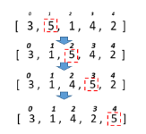

Array: Task 4.
Для розглянутих методів сортування спробувати вивести етапи сортування шляхом виведення відповідних таблиць за зразком.
Тобто кожного разу після обміну елементів вивести поточний стан масиву на екран.
For the considered sorting methods, try to output the sorting stages by outputting the corresponding tables according to the sample.
That is, each time after exchanging elements, display the current state of the array on the screen.